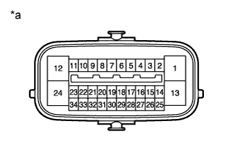
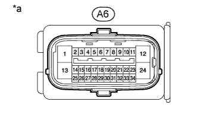

АНТИБЛОКИРОВОЧНАЯ СИСТЕМА ТОРМОЗОВ > КОНТАКТЫ ЭБУ |
| КОНТАКТЫ ЭБУ |
|  |
| *a | Устройство с неподсоединенным жгутом проводов (ЭБУ системы противоскольжения) |
| Номера контактов (обозначения) | Описание контактов |
| 1 (GND1) | Масса ЭБУ системы противоскольжения |
| 2 (STP) | Вход выключателя стоп-сигналов |
| 4 (RL-) | Вход (-) сигнала частоты вращения левого заднего колеса |
| 5 (RL+) | Выход питания (+) датчика частоты вращения левого заднего колеса |
| 6 (FR-) | Вход (-) сигнала частоты вращения правого переднего колеса |
| 7 (FR+) | Выход питания (+) датчика частоты вращения правого переднего колеса |
| 9 (EXI4) | Вход датчика блокировки межосевого дифференциала |
| 11 (SP1) | Выход сигнала скорости для спидометра |
| 12 (+BS) | Питание реле электромагнитного клапана |
| 13 (GND2) | Масса электродвигателя насоса |
| 14 (CANL) | Линия шины CAN низкого уровня |
| 16 (RR-) | Вход (-) сигнала частоты вращения правого заднего колеса |
| 17 (RR+) | Выход питания (+) датчика частоты вращения правого заднего колеса |
| 18 (FL-) | Вход (-) сигнала частоты вращения левого переднего колеса |
| 19 (FL+) | Выход питания (+) датчика частоты вращения левого переднего колеса |
| 22 (STP2) | Вход ЭБУ стоп-сигналов |
| 24 (+BM) | Питание реле электродвигателя |
| 25 (CANH) | Линия шины CAN высокого уровня |
| 27 (FSW+) | Вход реле нагрузки на педаль тормоза |
| 29 (HZRI) | Вход выключателя аварийной сигнализации |
| 33 (TS) | Ввод проверки датчика |
| 34(IG1) | Источник питания ЭБУ |
| ПРОВЕРКА КОНТАКТОВ |
|  |
| *a | Вид спереди разъема со стороны жгута проводов: (для ЭБУ системы противоскольжения) |
Отсоедините разъем и измерьте напряжение и сопротивление со стороны жгута проводов.
Отсоедините разъем ЭБУ системы противоскольжения.
Измерьте напряжение и сопротивление в соответствии со значениями, приведенными в таблице.
| Номера контактов (обозначения) | Цвет проводки | Описание контактов | Условие | Заданные условия |
| A6-1 (GND1) - масса | W-B - масса | Масса ЭБУ системы противоскольжения | Всегда | Менее 1 Ом |
| A6-2 (STP) - масса | V - масса | Вход выключателя стоп-сигналов | Педаль тормоза нажата → отпущена. | 8–14 В → менее 1,5 В |
| A6-12 (+BS) - масса | L-R - масса | Питание реле электромагнитного клапана | Всегда | 11 – 14 В |
| A6-13 (GND2) - масса | W-B - масса | Масса электродвигателя насоса | Всегда | Менее 1 Ом |
| A6-22 (STP2) - масса | L - масса | Вход ЭБУ стоп-сигналов | Педаль тормоза нажата → отпущена. | 8–14 В → менее 1,5 В |
| A6-24 (+BM) - масса | B - масса | Питание реле электродвигателя | Всегда | 11 – 14 В |
| A6-25 (CANH) - A6-14 (CANL) | B*1, R*2 - W | Шина CAN | Зажигание выключено | 54-69 Ом |
| A6-27 (FSW+) - масса | V-G - масса | Вход реле нагрузки на педаль тормоза | Педаль тормоза нажата → отпущена. | 950-1050 Ом → 203-223 Ом |
| A6-34 (IG1) - масса | G - масса | Источник питания ЭБУ | Зажигание включено | 11-14 В |